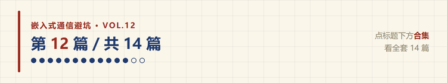
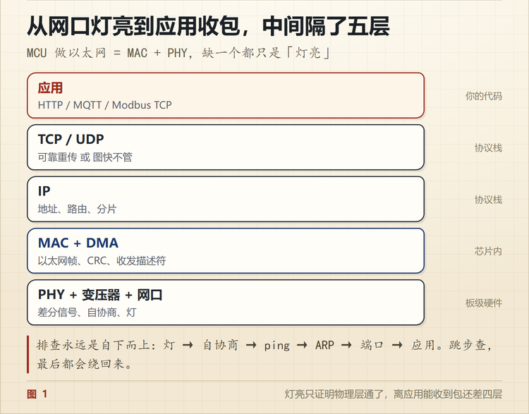
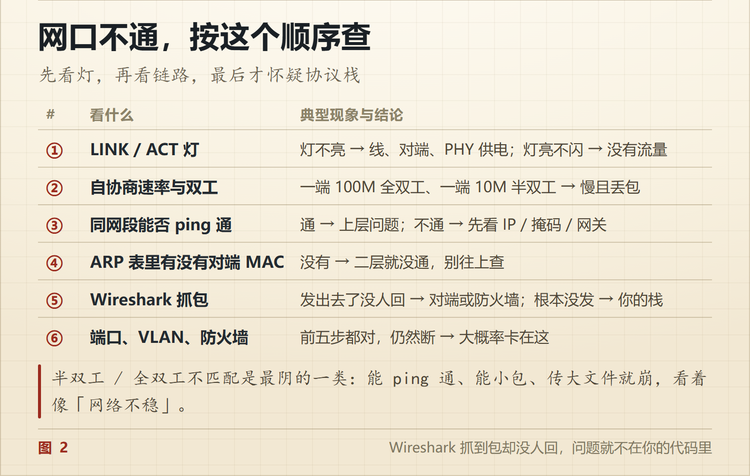

网口灯亮了，为什么还是 ping 不通
🐵 程序小猴 · 嵌入式通信避坑 Vol.12
灯只证明物理层活着，离你收到数据还差四层。

新板子第一次上网，最让人心里一松的瞬间，是网口那两个灯亮起来。
绿灯常亮，黄灯偶尔闪一下。看上去一切正常。
然后打开电脑，ping 一下，请求超时。
我换过三根网线，换过两个交换机口，最后才发现问题在代码里，跟线一点关系都没有。
一、灯亮只能说明一件事
网口通常有两个灯。
绿灯常亮，说明链路建立了。PHY 和对端完成了自协商，双方谈好了速率和双工模式。
黄灯闪，说明有数据在收发。
灯亮只到这一步为止。它说明电信号能过去，不说明任何上层的事。
MAC 有没有初始化、IP 配没配、地址对不对、协议栈跑没跑起来，灯一概不管。
所以「灯亮 ping 不通」这个现象，恰恰说明物理层是好的，问题在上面几层。
二、从灯到收包，隔了五层
| 层 | 谁在做 | 出问题时的现象 |
|---|---|---|
| 应用 | 你的代码 | 能连上但数据不对 |
| TCP / UDP | 协议栈（lwIP 之类） | 连不上、连上就断 |
| IP | 协议栈 | ping 不通、跨网段不通 |
| MAC + DMA | 芯片内部 | 收不到包、丢包 |
| PHY + 变压器 + 网口 | 板级硬件 | 灯不亮、链路起不来 |

排查要自下而上。
灯 → 自协商 → ping → ARP → 端口 → 应用。
跳步会浪费时间。比如灯都不亮就去查 IP，那是白查。
三、PHY 和 MAC 不是一回事
这两个词经常被混着说，其实是两件事。
MAC 是数字部分，负责组帧、算 CRC、地址过滤、DMA 搬运。多数 MCU 把它集成在片内。
PHY 是模拟部分，负责把数字信号变成差分电平，发到双绞线上，也负责从线上把信号解回来。
中间用 MII 或 RMII 连接。RMII 省线，只要 7 根左右，但要一路 50MHz 的参考时钟。
嵌入式以太网起不来，一半的问题出在这个接口上。
四、Link 起来了但 ping 不通
灯亮着，说明 PHY 活着。再往上是哪一层断了？
往下查这几样。
PHY 地址对不对。 MDIO 总线上最多挂 32 个 PHY，靠 5 位地址区分。地址由芯片的 PHYAD 引脚或者 strapping 决定，代码里配错了，MAC 就管不到 PHY，读出来的寄存器全是 0xFFFF 或者 0x0000。
自协商结果对不对。 有的 PHY 默认强制百兆全双工，对端是自协商，两边谈不拢。表现为能 link，但一传数据就大量丢包。查一下 PHY 的状态寄存器，看实际协商到的是 100M 全双工还是 10M 半双工。
IP 和子网对不对。 设备 IP 是 192.168.1.100，掩码 255.255.255.0，电脑是 192.168.0.10，这两个根本不在一个网段，ping 不通很正常。要么改 IP，要么配网关。
ARP 有没有通。 ping 之前，设备得先知道对方的 MAC 地址。这一步靠 ARP 广播。抓包能看到 ARP 请求出去，但收不到应答，说明二层就不通，问题在 MAC 或者交换机。
五、能 ping 通但应用收不到
这一类更隐蔽。
ping 用的是 ICMP，很短，一次一问一答。它通了，只说明网络层没问题。
应用层收不到数据，常见三个原因。
端口不对。 设备在 8080 上监听，客户端连 80，永远连不上。
TCP 是字节流，不是消息。 这是新手最容易踩的。你发了两条 100 字节的消息，接收方一次 recv 可能读到 200 字节，也可能分三次读到 60、80、60。
TCP 不保证「一次发送对应一次接收」。所以应用层必须自己定边界，要么在包头写长度，要么用固定分隔符。
防火墙或者交换机做了隔离。 有些工业交换机开了端口隔离，同一交换机下的两个口互相不通。
六、嵌入式最容易踩的三个坑
PHY 地址配错。 最常见，也最容易查。读一下 PHY 的 ID 寄存器（地址 2 和 3），能读出厂商和型号就说明地址对了，读出来全 FF 就是没通。
RMII 的 50MHz 参考时钟。 这个时钟可以由 MCU 输出给 PHY，也可以由 PHY 的晶振提供。两边都输出就会打架，两边都不输出就没有时钟。看原理图上 REF_CLK 是谁驱动的，代码里对应配。
变压器和差分走线。 网口变压器（磁性器件）不能省，它做隔离和阻抗匹配。差分对要走等长、靠近、不跨分割。这一块出问题，表现为链路能起，但丢包率高、距离一长就断。
七、抓包是唯一的真相
串口有逻辑分析仪，以太网有 Wireshark。
交换机上做个端口镜像，或者设备直连电脑，把网卡抓包打开，能看到的比你想的多。
- ARP 请求发出去了吗，有应答吗
- ping 的 ICMP 包到了设备吗，设备回了吗
- TCP 的 SYN 到了吗，SYN-ACK 回了吗，还是直接被 RST
- 重传多不多，是不是一直在重发同一个包
很多「代码看起来没问题」的情况，抓一次包就知道卡在哪一步。
能 ping 通不等于应用正常。 这两件事隔着一层协议栈。
八、按这个顺序查
网口不通，按这个顺序走。每一步都能排掉一批可能。

第 ③ 步最省事。不用拆机壳，读两个寄存器就能判断 MDIO 通没通。能读出厂商和型号，说明 PHY 活着；读出来全 FF，说明根本没连上。
第 ⑤ 步最彻底。前五步都过了还是不通，就别再猜，抓包。包走到哪一步停的，一眼就看得出来。
能 ping 通不等于应用正常。 这两件事中间隔着一层协议栈，别混着查。

以太网把嵌入式从「板子之间传几个字节」带进了真正的网络世界。
代价是，问题也从外设寄存器，变成了协议栈、操作系统和网络架构。
你调试以太网，最先看的是哪一样？评论区说说。
📌 这是「嵌入式通信避坑」第 12 篇，全系列 14 篇，从串口一路讲到 CAN 和无线选型。
💬 觉得有用就点个在看，下一篇把线拔掉，讲 Wi-Fi、BLE、LoRa 这三种无线到底怎么选。